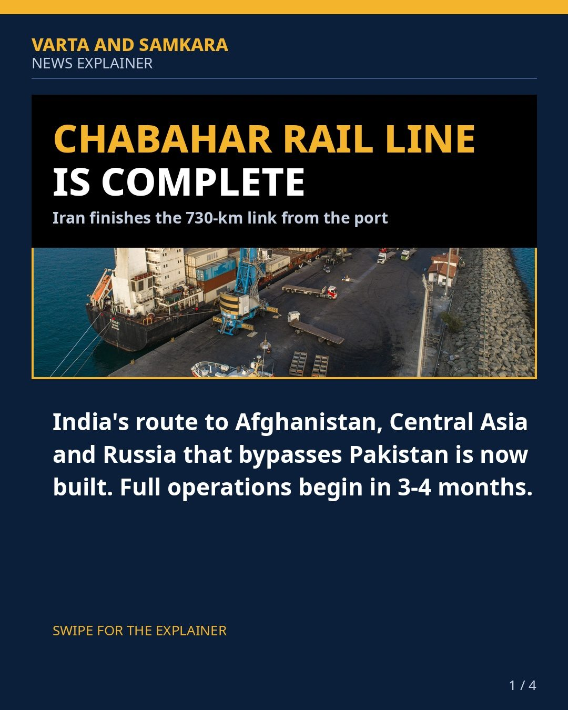
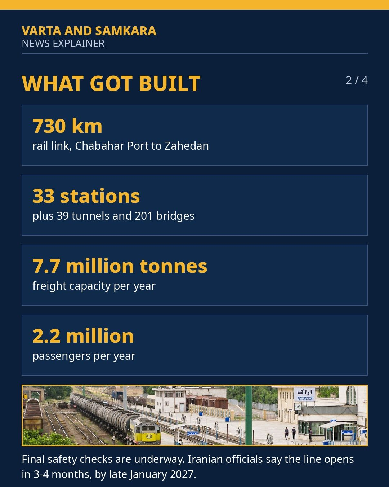
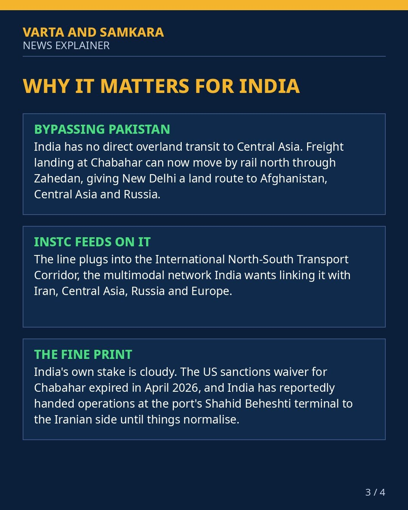
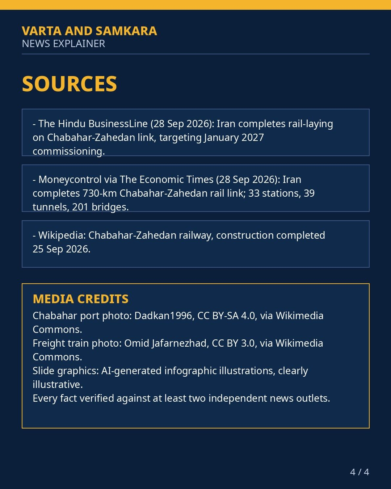

CHABAHAR RAIL LINE COMPLETE: INDIA'S NEW GATEWAY TO CENTRAL ASIA

Iran has finished the 730-km Chabahar-Zahedan railway, linking the Indian Ocean port of Chabahar directly to Iran's national rail network at Zahedan. Full operations are expected in 3 to 4 months, by late January 2027.
The line has 33 stations, 39 tunnels and 201 bridges, and is designed to move 7.7 million tonnes of freight and 2.2 million passengers a year. It gives the Chabahar port, where India holds a strategic stake, a direct rail connection to the Iranian heartland for the first time.
For India, the payoff is a trade route to Afghanistan, Central Asia and Russia that bypasses Pakistan, feeding into the International North-South Transport Corridor (INSTC). The corridor promises to cut transit times and costs for Indian goods headed to Eurasian markets.
Sanctions cloud India's role
But India's own role at the port is cloudy. The US sanctions waiver for Chabahar expired in April 2026, leaving New Delhi's long-term position at the port uncertain even as the new railway comes online.
Iranian officials have presented the railway as a milestone for regional connectivity. Whether India can fully use the route it helped build will depend on how the sanctions question is resolved in the coming months.
In pictures



See the original reel / carousel with motion graphics on Instagram.
View on Instagram